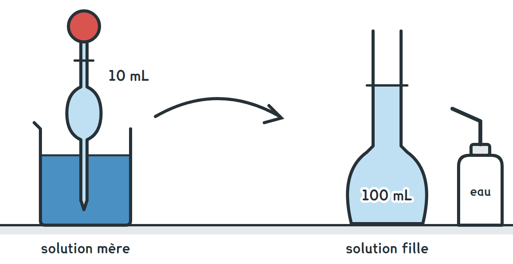
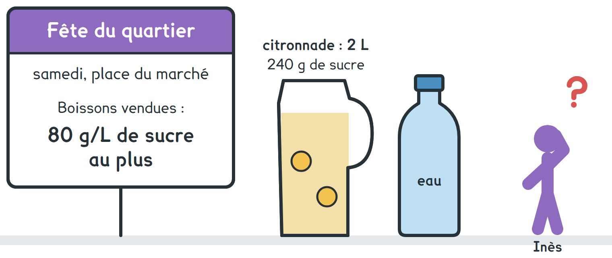

AA Algèbre et analyseCN Calculs numériquesAU Automatismes
La question
La citronnade est-elle trop sucrée ? Relis ta réponse du premier jour : combien de morceaux de sucre dans un verre ? Aujourd’hui, on tranche.
Diluer dix fois

Diluer dix fois : 10 mL de solution mère prélevés à la pipette jaugée, versés dans une fiole jaugée de 100 mL, puis complétés d’eau jusqu’au trait.
Dans l’atelier de physique-chimie, on prélève 10 mL de solution mère à la pipette jaugée, on les verse dans une fiole de 100 mL et on complète d’eau jusqu’au trait. La solution fille est bien plus claire.
Diluer. On ajoute de l’eau : la masse de soluté ne change pas, le volume augmente, la concentration baisse. Diluer 10 fois, c’est multiplier le volume par 10 : la concentration est divisée par 10.
Comparée à la solution mère, la solution fille est : plus concentrée | moins concentrée
Pendant la dilution, la masse de soluté : change | ne change pas
10 mL complétés à 100 mL : la concentration est divisée par : 10 | 90 | 100
La décision

L’affiche de la fête du quartier : 80 g/L de sucre au plus pour les boissons vendues. À côté, la carafe de citronnade, 2 L et 240 g de sucre, et une bouteille d’eau.
La citronnade est à 120 g/L, et la fête n’accepte que 80 g/L. Les prochaines carafes prendront moins de sucre. Pour la carafe déjà prête, on ajoute de l’eau : ses 240 g de sucre ne bougent pas, on cherche le volume où ils font 80 g par litre.
Série · AA
Les nombres de la décision
le sucre d’une carafe de 2 L à 80 g/L, en grammes
le volume que doit atteindre la carafe prête, en litres
l’eau à lui ajouter, en litres
le sucre d’un verre de 25 cL à 80 g/L, en grammes
le nombre de morceaux de 5 g dans ce verre
Pour le sucre, la concentration multipliée par le volume en litres. Pour le volume, combien de fois 80 g dans 240 g. Pour l’eau, ce qui manque entre les 2 L déjà là et ce volume.
Ajouter 3 L d’eau. 240 ÷ 80 = 3 donne le volume que la carafe doit atteindre. Elle contient déjà 2 L : on n’ajoute que ce qui manque.
Exercice · AA
La décision
La citronnade est-elle trop sucrée ? Répondre à la question de la séquence en deux phrases, avec des nombres : la réponse, puis ce qu’on fait.
Relire les nombres de la série juste au-dessus : ils disent tout ce qu’il faut écrire.
J’ai répondu oui ou non
J’ai comparé deux concentrations, celle de la citronnade et celle permise
J’ai dit ce qu’on fait, avec un nombre : l’eau ajoutée ou le sucre des prochaines carafes
Je m’entraîne
Série · AA
Série 1 — diluer
200 g/L dilué 4 fois
120 g/L dilué 2 fois
90 g/L dilué 3 fois
400 g/L dilué 10 fois
640 g/L, 1 dose pour 7 doses d’eau
Diluer n fois, c’est diviser la concentration par n. Pour les doses, on compte celle de sirop avec celles d’eau.
Série · AA
Série 2 — les pourcentages
50 % de 18 €
25 % de 8 €
20 % de 15 €
5 € qui augmentent de 10 %
40 € qui baissent de 25 %
10 %, c’est diviser par 10 ; 50 %, la moitié ; 25 %, le quart. Une hausse s’ajoute au prix de départ, une baisse se retire.
Pendant une dilution, ce qui ne change pas, c’est : la masse de soluté | la concentration
Un prix de 10 € qui baisse de 20 % devient : 2 € | 8 € | 12 €
8 € et 8 morceaux sont : la même réponse | deux réponses différentes
Pour ceux qui ont fini
Exercice · AA
Des verres en plus
La carafe passe de 2 L à 3 L. Avant, elle remplissait 8 verres de 25 cL. Combien en remplit-elle après ?
Combien de fois 0,25 L dans 3 L ?
Exercice · AA
En pourcentage
Passer de 8 à 12 verres, c’est une hausse de combien de pour cent ?
La hausse, c’est 4 verres. Quelle part de 8 font 4 verres ? On l’écrit sur 100.
Exercice · AA
La limonade du voisin
Un autre food-truck vend 1 L de limonade à 96 g/L. Combien de litres d’eau faut-il ajouter pour la ramener à 80 g/L ?
Le sucre ne bouge pas : 96 g. Le volume à atteindre est 96 ÷ 80. Puis on retire le litre déjà là.
Ce qui reste de la séance
Diluer ne retire pas de sucre : il se partage dans plus d’eau. La citronnade passe de 120 à 80 g/L avec 1 L d’eau pour 2 L, et un verre passe de six morceaux de sucre à quatre.
Exercices bilan de séquence
Un seul problème, qui reprend toute la séquence 2. On le fait d’un bout à l’autre, comme un vrai : il n’y a pas d’indication de méthode en cours de route.
Le sirop de menthe de la fête
Le food-truck sert aussi des menthes à l’eau. La notice du sirop dit comment servir un verre, et la fête impose sa limite de sucre.
Le sirop de menthe
60 g de sucres pour 100 mL
La notice
1 volume de sirop pour 5 volumes d’eau
La règle de la fête
80 g/L de sucre au plus
La question : « Le verre servi selon la notice peut-il être vendu ? Sinon, combien de doses d’eau faut-il pour une dose de sirop ? »
Lire la situation
a) Relever la masse de sucres et le volume de sirop qui la contient.
b) Dire en quelle unité la concentration sera donnée.
Choisir la méthode
c) Dire comment se calcule la concentration du sirop.
d) Dire ce que devient cette concentration quand on ajoute des doses d’eau.
Calculer
e) Calculer la concentration du sirop, puis celle du verre servi selon la notice.
f) Calculer la concentration du verre avec 6 doses d’eau, puis avec 7.
Conclure
g) Répondre à la question par une phrase, avec la concentration du verre et le nombre de doses d’eau.
Série · AA
Les calculs du bilan
le volume de sirop, 100 mL, en litres
la concentration du sirop, en g/L
le nombre de doses dans le verre de la notice, sirop compris
la concentration du verre de la notice, en g/L
la concentration avec 6 doses d’eau, arrondie à l’unité, en g/L
la concentration avec 7 doses d’eau, en g/L
La masse divisée par le volume en litres, puis la concentration du sirop divisée par le nombre total de doses, celle de sirop comprise.
Exercice · AA
Pourquoi on divise par 6
Avec 1 dose de sirop pour 5 doses d’eau, on divise la concentration du sirop par 6, et non par 5. Expliquer pourquoi, en une ou deux phrases.
Où est le sucre avant de mélanger ? Et dans combien de doses se trouve-t-il après ?
J’ai dit que le sucre vient tout entier de la dose de sirop
J’ai dit que ce sucre se partage dans tout le verre
J’ai compté la dose de sirop avec les doses d’eau : 6 doses en tout
Ce site rappelle la méthode. Aucun corrigé, rien n'est noté.